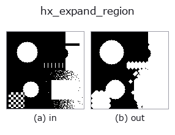

halcon_ext op• Data kinds: region → region
• Call: fullseye.apply(img, "hx_expand_region", a=0.5, b=0.5) (the 2-D model is one image plus two scalar knobs a,b∈[0,1])
• HALCON equivalent: expand_region (the HALCON reference is a useful guide to its meaning and parameters)

*The figure is the actual output on a synthetic 128×128 input. Left: input, right: output. Point clouds are drawn as a top-down scatter (brightness = z), 1-D series as a line plot, volumes as the maximum-intensity projection along z, videos as the middle frame, complex images as magnitude; return values that are not pictures are shown as the values themselves.*
Sweeping knob a (0.1 / 0.5 / 0.9, the other knob at its default):
▸ hx_expand_region: knob a sweep (docs site)
*Knob b does not change the output (measured: identical at 0.1 / 0.5 / 0.9).*
Stages (the ops that come before → this op, left to right):
▸ hx_expand_region: stages (docs site)
On other images (synthetic scene / photo / coins. Top row: inputs, bottom row: their outputs. Knobs at default):
▸ hx_expand_region: other inputs (docs site)
Fill the gaps between regions (region -> region): dilate the binary region to encourage them to connect.
> The detailed description below is the original text — the summary and the headings are translated.
`v > 0.5 を region とみなし、4 近傍の十字構造要素を it 回反復した菱形(マンハッタン距離 it` 以内)で
`binary_dilation` を 1 回掛け、0/1 の float 配列で返す。
• `a → 膨張半径 it = 1 + int(a*4)(1〜5 画素)。互いの距離が 2*it` 画素以下の領域どうしがつながる。
• `b` は未使用。
隙間を埋めて連結を促す op で、領域は必ず太る(元の面積には戻らない)。元の大きさを保ちたいときは後段で
`hx_erosion1 を同程度の半径で掛けるか、初めから hx_closing` を使う。画像外は 0 扱い(膨張は端で止まる)。
空の region は空のまま返る。
• gallery2d_halcon_ext family guide
• Sample-data catalog (download URLs / licences) — 2-D uses skimage.data (BSD/public domain) plus synthetic images; 3-D lists download URLs for real data sources (Stanford, PDS, …).
• Operator provenance and references — the sources of the research/methods this op family came from.
• The canonical algorithm (author, year) and its uses are named in the family usage guide above.
The program below has been verified to run (same input as the figure). In Studio's help this block becomes buttons that load and run it on the spot.
threshold 0.50 0.50 hx_expand_region 0.50 0.50
▸ Load this pipeline · Load & run
• gallery2d_halcon_ext — py -3.11 examples/gallery2d_halcon_ext.py
region as input)identity · reg_erode · reg_dilate · reg_open · reg_close · fill_holes · select_largest · remove_small
halcon_ext)hx_gen_circle · hx_gen_ellipse · hx_gen_rectangle2 · hx_gen_checker_region · hx_gen_grid_region · hx_gabor · hx_fit_surface1 · hx_fit_surface2
*Provenance: ops.py — 2D operator registry. This per-op note is generated by tools/opdocs.py md (do not hand-edit).*
© 2026 Kazufumi Furuse — Fullseye operator documentation. Licensed under Apache-2.0.
{kind=link}
{kind=link}
{kind=link}